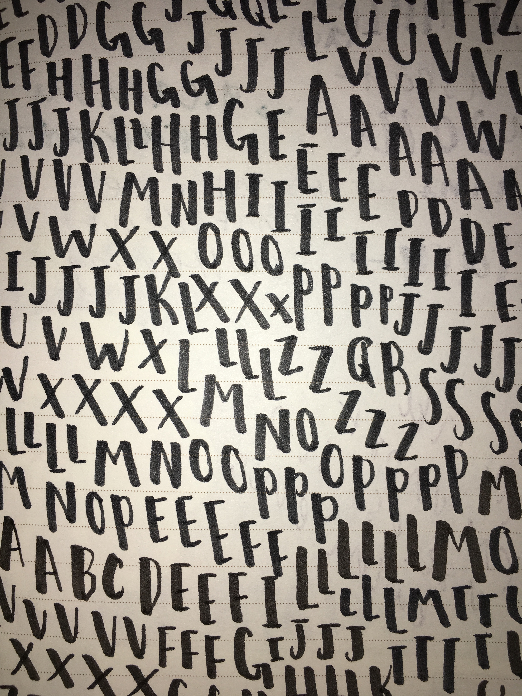
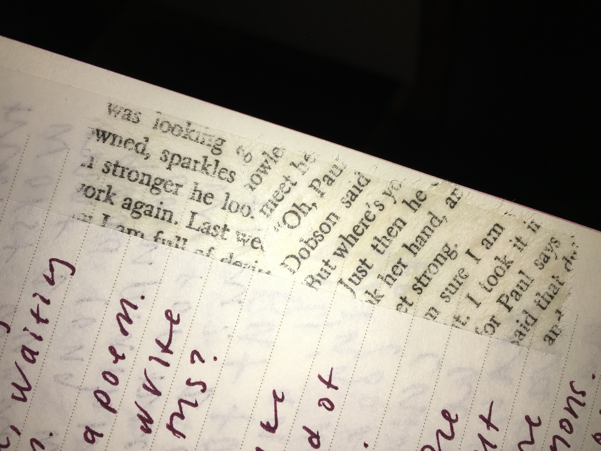
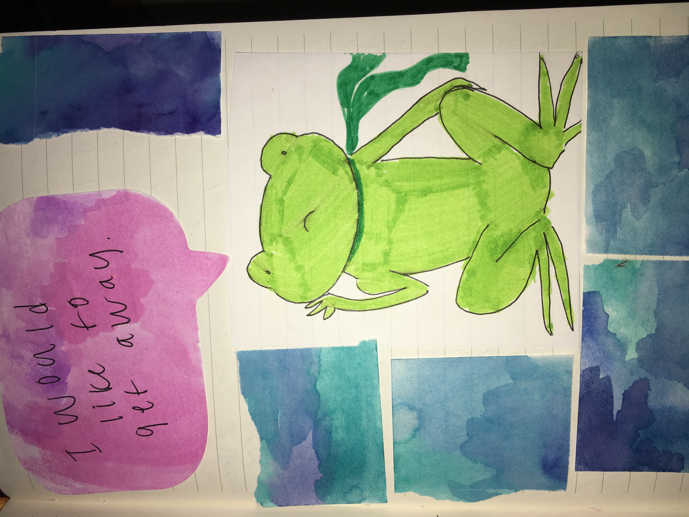

Example Entries
These are all from my most recent journals from the past two years!
I made this page when I wanted to dip my toes into calligraphy. It's not exactly super fancy script, but I (personally) think it looks cool. It was also a great way to destress — all I had to do was write some letters over and over.

This page has some souvenirs from when I travelled to France. Keeping ticket stubs is a little cliche, but if you never show anyone your journal, who's to judge? I also sometimes like to tape receipts into my journals. They're one of those things that are unbelievably common, but carry a lot of information (purchasing habits, etc) and are interesting to have in 10 years.

These cards are the ones that they give out as perfume samples. I liked how they looked (and now my journal sort of smells like the perfume!).
One of my favorite things about journalling is that you can put whatever you want in it. This is from a used book I bought—there was a piece of tape on the inside and when I peeled it off, it left an imprint of the text. Doesn't really serve any practical purpose or meaning other than looking cool.
I don't consider myself to be all that artistic, but sometimes I'm in the mood for some drawing. Here's a frog I whipped up when I was feeling especially down.

Here's a perfume page I have tabbed! Not everything I write is as neat as this (some might not even consider this neat) but it's an example of a page that I like looking back on for organizational purposes.
There's a lot of random things in my journal. I hope these encouraged you to try something new!